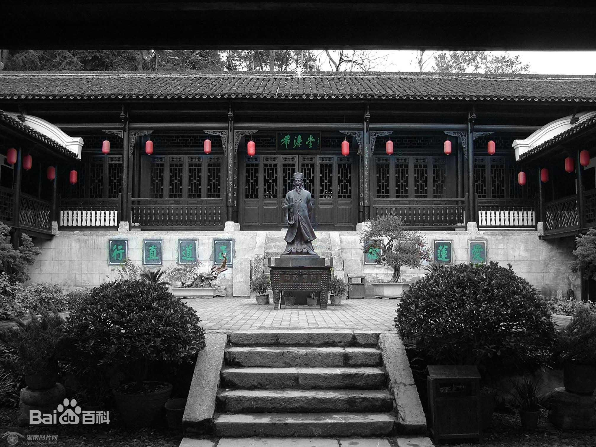
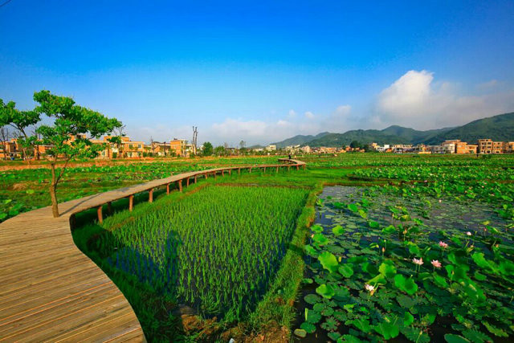

下面是爱莲广场的图片
想知道为什么我们这里到处都是莲花吗？

因为周敦颐曾在这里写下爱莲说所以就这样了
这里是金山古村，种着满满的莲花

下面是沙洲红色景区
是一块红色文化传承地。有半条被子故事发生地旧址，中央红军总部宿营地（含司令部、政治部、卫生部、后勤部、卫戍司令部）旧址，中国工农红军第四医院旧址，中央苏维埃国家银行旧址等；有毛泽东、周恩来、朱德、刘少奇、彭德怀、陈云等老一辈无产阶级革命家宿营住房旧址；有“半条被子”、“珍藏红军书”等故事；还有红军井、红军墓、红色文化陈列室、纪念广场等红色景点；是朱毛联名签署发布《出路在哪里？》文告的首发地、红军书发现地。红军长征曾在此宿营休整前后达7天，谱写了军民鱼水情深的一段历史。
“半条被子”，是红色经典故事。在1934年11月湖南汝城县沙洲村，3 名女红军借宿徐解秀老人家中，临走时，把自己仅有的一床被子剪下一半给老人留下了。
什么是共产党？共产党就是自己有一条被子，也要剪下半条给老百姓的人。”2016年10月，在纪念红军长征胜利80周年大会上，习近平总书记深情地讲述了一个 “半条被子”的故事。